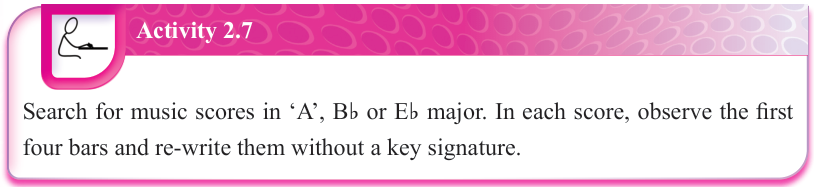

Figure 2.28: The major keys already learned and the total number of their flats or sharps

Activity 2.7
Search for music scores in ‘A’, Bb or Eb major.In each score, observe the first four bars and re-write them without a key signature.
Minor scales
In most cases, music played in a major key becomes live and entertaining.However, music that arouses a feeling of sadness is in a minor key.Minor scales sound different from major scales because they are constructed on different patterns of intervals.At this level, you will learn minor scales related to C, F and G major scales.